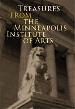

|  |
"Let me impress upon this institution not to spend money, that if husbanded would buy a good picture, on poor ones.... Make your standard high and live to it. This Institute is to pitch the key. Do not pitch the key too low." |
|
So said James J. Hill to a crowd of excited onlookers at the 1915 opening ceremony for The Minneapolis Institute of Arts. In the many decades since, The Minneapolis Institute of Arts has surpassed even Hill's ambitious mandate, setting the highest goals and continuing to build on its distinguished cultural legacy with service to local, national, and international audiences. While outstanding leadership, state-of-the-art facilities, inspired educational programming and innovative use of technology have contributed to the Institute's ongoing vitality, the foundation of its strength lies in the quality of its permanent collection of art. Nearly 100,000 works of art spanning 5,000 years of cultural history represent the creative achievements of peoples from around the globe. This book guides readers on a captivating tour of The Minneapolis Institute of Arts' collection. Vivid photography and compelling text portray a cross-section of the Institute's finest treasures, organized in terms of the museum's seven areas of curatorial focus. An introductory timeline tracing the Institute's history combines with essays on each collection area to provide context for nearly 130 color images. With credits noting the many donors whose generosity has shaped the Institute's collection of art, the book reveals the range of treasures—historic and artistic—which together comprise one of the United States' most respected public art museums. |
|
|
Send comments to the Webmaster. |
|